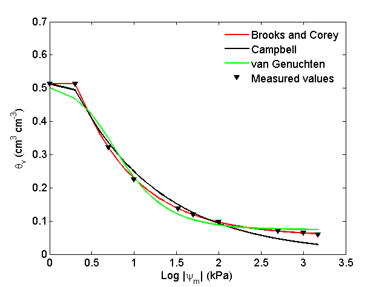
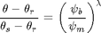
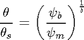
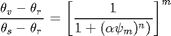

SWRCFIT
Fits soil water retention models to measured data.
Contents
Syntax
[BCx, Cx, vGx, RMSE] = SWRCfit (theta_s, theta_v, h)
[BCx, Cx, vGx, RMSE] = SWRCfit (theta_s, theta_v, h) fits pairwise volumetric water content (theta_v), and soil matric potential (h) using three well known soil water retention models. Information about saturated volumetric water content (theta_s) is also required. BCx, Cx, and vGx are arrays containing the values of the fitted parameters for each model. RMSE reports the root mean squared error of each model.
Inputs
theta_s = volumetric water content at saturation (or total porosity) [cm3]
theta_v = measured volumetric water content [cm3/cm3]
h = matric potential at each theta_v [kPa]
Output
BCx = Brooks and Corey fitting parameters (Model by Brooks and Corey, 1964)
BCx(1) = bubbling pressure
BCx(2) = lambda (pore size distribution)
BCx(3) = theta_r (residual water content)Cx = Campbell fitting parameters (Model by Campbell, 1974)
Cx(1) = bubbling pressure
Cx(2) = constant related to the pore size distribution.vGx = van Genuchten fitting parameters (Model by van Genuchten, 1980)
vGx(1) = alpha (inverse of bubbling pressure) [1/cm or 1/kPa]
vGx(2) = theta_r [cm3/cm3]
vGx(3) = n (related to pore size distribution)Examples
The following example fits all three models for measured data in a silt loam soil (data measured by Or et al., 1991).
theta_v=[0.513 0.513 0.321 0.225 0.138 0.120 0.098 0.07 0.064 0.060]; % volumetric water content (cm3/cm3). h=[1 2 5 10 33 50 100 500 1000 1500]; % soil matric potential (kPa). [BCx, Cx, vGx, RMSE] = SWRCfit (0.513, theta_v, h); % Call function. Saturated vol. water content is 0.513 cm3/cm3.
BCx =
2.0408
0.6094
0.0535Cx =
1.8366
2.3385vGx =
0.2448
0.0736
2.0658RMSE =
'SWRC Model' 'RMSE' 'Unit'
'Brooks and Corey' [0.0013] 'cm3/cm3'
'Campbell' [0.0190] 'cm^3 cm^3'
'van Genuchten' [0.0195] 'cm3/cm3'The resulting plot is:

See also
SWRCfun | rosetta | soilwaterptf
References
Brooks R.H. and A.T. Corey. 1964. Hydraulic properties of porous media. Hydrology papers No 3. Colorado State University. Fort Collins, Colorado.
Campbell, G.S. A simple method for determining unsaturated conductivity from moisture retention data. Soil Sci.,117,311-314.
van Genuchten, M.T.1980. A closed-form equation for predicting the hydraulic conductivity of unsaturated flow. Soil Sci. Soc. Am. J. 44, 892-898.
Or,D., D.P. Groeneveld, K. Loague, and Y. Rubin. 1991. Evaluation of single and multi-parameter methods for estimating soil-water characteristic curves. Geotechnical Engineering Report No. UCB/GT/91-07, University of California, Berkeley, 54 pp.
Tuller and Or, 2004. M. Tuller, D. Or, in: D. Hillel (Ed.), Water retention and characteristic curve. Encyclopedia of soils in the environment, Elsevier Ltd., Oxford, United Kingdom (2004), pp. 278–289.
Updates
Created by AP on 11-Dec-2013
Soil water retention models
- Brooks and Corey model

BCmodel = @(BCx,h) min((BCx(1)./h).^BCx(2).*(theta_s-BCx(3))+BCx(3),theta_s); % Brooks and Corey model
- Campbell model

Cmodel = @(Cx,h) min((Cx(1)./h).^(1/Cx(2)).* theta_s, theta_s); % Campbell model
- van Genuchten model

vGmodel = @(vGx,h) (1./(1+(vGx(1)*h).^vGx(3) )).^(1-1/vGx(3)) *(theta_s-vGx(2))+vGx(2); % van Genuchten model
% Define tentative initial parameter values BCx0=[2; 0.5; 0.07]; Cx0=[2; 2]; vGx0=[0.03;0.08; 1.5]; % Fit model to measured data using lsqcurvefit function [BCx] = lsqcurvefit(BCmodel,BCx0,h,theta_v); % Brooks and Corey anonymous function [Cx] = lsqcurvefit(Cmodel,Cx0,h,theta_v); % % Campbell anonymous function [vGx] = lsqcurvefit(vGmodel,vGx0,h,theta_v); % % van Genuchten anonymous function % Calculate root mean squared error (RMSE) RMSE = {'SWRC Model', 'RMSE', 'Unit';... % Build cell array 'Brooks and Corey',sqrt(mean((BCmodel(BCx,h)-theta_v).^2)),'cm3/cm3';... 'Campbell',sqrt(mean((Cmodel(Cx,h)-theta_v).^2)),'cm^3 cm^3';... 'van Genuchten', sqrt(mean((vGmodel(vGx,h)-theta_v).^2)),'cm3/cm3'}; % Plot Data plot(log10(1:1500),BCmodel(BCx,1:1500),'-r','LineWidth',2);hold on plot(log10(1:1500),Cmodel(Cx,1:1500),'-k','LineWidth',2);hold on plot(log10(1:1500),vGmodel(vGx,1:1500),'-g','LineWidth',2);hold on scatter(log10(h),theta_v,'filled','vk'); hold off % Label plot xlabel('Log |\psi_m| (kPa)','FontSize',13); ylabel('\theta_v (cm^3 cm^{-3})','FontSize',13); legend('Brooks and Corey','Campbell', 'van Genuchten', 'Measured values') legend boxoff set(gca,'FontSize',13)
Copyright 2013 This function is part of the Soil Physics Toolbox created by the Soil Physics team at the Plant and Soil Sciences Department, Oklahoma State University.